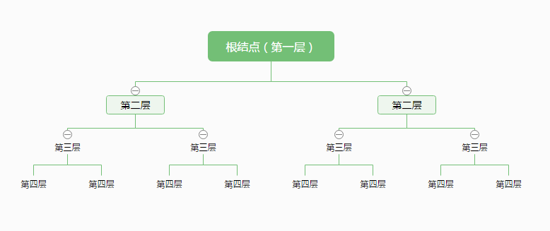
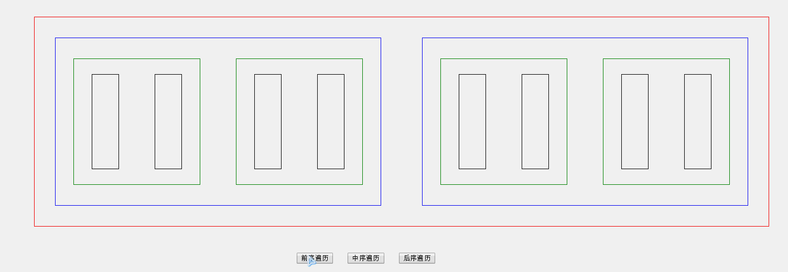
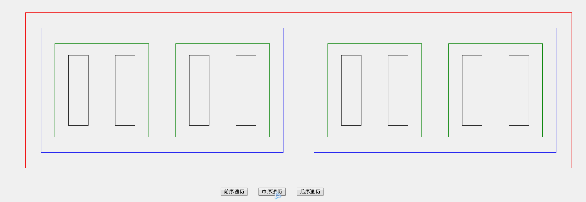

二叉树相关知识复习
参考文章：https://segmentfault.com/a/1190000000740261
二叉树，Binary Tree，是指每个节点最多有两个子树的树结构。通常子树被称作“左子树”（left subtree）和“右子树”（right subtree）。
二叉树的第i层至多有2^(i-1)个结点；深度为k的二叉树至多有2^k-1个结点
满二叉树：深度为k，且有2^k-1个节点
完全二叉树：深度为k，有n个节点的二叉树，当且仅当其每一个节点都与深度为k的满二叉树中，序号为1至n的节点对应。
完全二叉树的特点：
①叶子结点只能出现在最下两层。
②最下层的叶子一定集中在左部连续位置。
③倒数第二层，若有叶子结点，一定都在右部连续位置。
④如果结点度为1，则该结点只有左孩子。
⑤同样结点树的二叉树，完全二叉树的深度最小。
二叉树的三种遍历方式
（1）前序遍历（DLR），首先访问根结点，然后遍历左子树，最后遍历右子树。简记根-左-右。
（2）中序遍历（LDR），首先遍历左子树，然后访问根结点，最后遍历右子树。简记左-根-右。
（3）后序遍历（LRD），首先遍历左子树，然后遍历右子树，最后访问根结点。简记左-右-根。
三种遍历的javaScript实现
树结构：

|
|
补充
firstElementChild和fristChild的区别：
firstElementChild:获取父节点下第一个元素节点对象，如果没有则返回null
firstChild:获取父节点下第一个节点对象（包括元素节点和文本结点）
示例：
前序遍历实现效果：

中序遍历实现效果：

后序遍历实现效果：